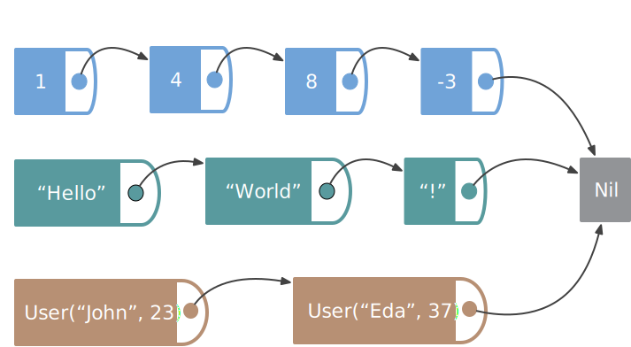

class: center, middle # Parametric functions - Part 1 --- background-image: url(img/foundation/parametric-list.svg) # List is a generic data structure --- # How to avoid duplication? .medium-left[ <br> <br> <br> <br> ```scala def size(list: List[Int] ): Int def size(list: List[String]): Int def size(list: List[User] ): Int ``` ] .large-right[  ] --- # How to avoid duplication? <br> ```scala def map(list: List[Int] , update: Int => Int ): List[Int] def map(list: List[String], update: String => String): List[String] def map(list: List[User] , update: User => User): List[User] ``` <br> ```scala def map(list: List[User], update: User => Int ): List[Int] def map(list: List[User], update: User => String): List[String] ``` --- # Parametric function <br> ```scala def map[A](list: List[A], update: A => A): List[A] ``` <br> ```scala map(List(1,2,3,4), (x: Int) => x + 1) // res0: List[Int] = List(2, 3, 4, 5) map(List("Hello", "World"), (x: String) => x.reverse) // res1: List[String] = List("olleH", "dlroW") ``` --- # Parametric function <br> ```scala def map[A](list: List[A], update: A => A): List[A] ``` <br> ```scala val users = List(User("John", 23), User("Alice", 37), User("Bob", 18)) ``` ```scala map(users, (user: User) => user.age) // error: type mismatch; // found : repl.Session.App.User => Int // required: Any => Any // map(users, (user: User) => user.age) // ^^^^^^^^^^^^^^^^^^^^^^^^ ``` --- # Parametric function <br> ```scala def map[A](list: List[A], update: A => A): List[A] ``` <br> ```scala val users = List(User("John", 23), User("Alice", 37), User("Bob", 18)) ``` ```scala map[User](users, (user: User) => user.age) // error: type mismatch; // found : Int // required: repl.Session.App.User // map[User](users, (user: User) => user.age) // ^^^^^^^^ ``` --- # Parametric function <br> ```scala def map[From, To](list: List[From], update: From => To): List[To] ``` -- <br> ```scala val users = List(User("John", 23), User("Alice", 37), User("Bob", 18)) ``` ```scala map(List(1,2,3,4), (x: Int) => x + 1) // res5: List[Int] = List(2, 3, 4, 5) map(users, (user: User) => user.age) // res6: List[Int] = List(23, 37, 18) ``` --- # Applies to all parametric types <br> ```scala trait JsonDecoder[A]{ def decode(value: Json): A } case class Predicate[A](value: A => Boolean) trait ConnectionIO[A] ```